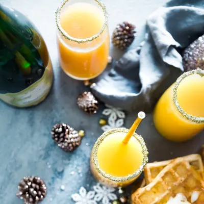

-

- 1 Versez le jus de cranberry dans une coupe.
2 Ajoutez le jus de citron et remplissez avec du mousseux.
3 Servez bien frais votre cocktail cranberry, décoré d'une brochette de cranberries et de rondelles de citron.- Astuces :
Pour réaliser une variante sans alcool de ce cocktail cranberry, remplacez le mousseux par du Schweppes ou par une limonade maison. Vous souhaitez ajouter une touche de fantaisie ? Jouez la carte de la gourmandise en déposant une fraise Tagada dans votre coupe !

- 1 Verser la vodka et la liqueur dans un shaker.
2 Ajouter des glaçons dans le shaker.
3 Agiter jusqu’à ce que le shaker soit froid uniformément (40s / 1min).
4 Verser dans un verre à martini sans les glaçons.
5 Si vous le souhaitez vous pouvez ajouter de la glace pilée et décorer avec des mûres fraiches..
Le Black Pearl est un cocktail festif particulièrement apprécié en période de fin d’année. Sa couleur pourrait en faire un cocktail parfait pour noël. Le Black pearl fait partie des recettes de cocktails de la catégorie cocktail et se sert dans un verre à martini. 
- 1 Verser le rhum dans le saladier.
2 Ajouter le jus d’ananas et d’orange.
3 Presser les citrons verts et mélanger.
4 Ajouter le sucre et mélanger jusqu’à dissolution totale du sucre.
5 Mettre au frigo, jusqu’au moment de servir.
6 Avant de servir verser le champagne ou le crémant.
7 Servir avec une louche..
Alors, si vous voulez surprendre vos invités et leur offrir un apéritif au champagne mémorable, essayez le “Punch de Noël”. Si vous le souhaitez vous pouvez ajouter une gousse de vanille dans la préparation avant de la mettre au frigo. 
- 1 Frotter le bord du verre à cocktail avec le jus de citron vert.
2 Trempez le bord dans du gros sel.
3 Mélanger la tequila, le curaçao bleu et le jus de citron vert avec de la glace dans un shaker, filtrer et verser dans le verre cerclé de sel et servir.
Le Blue margarita fait partie des recettes de cocktails de la catégorie classique et se sert dans un verre à cocktail. La recette du Blue margarita est une variation de la recette de Margarita.

- Verser l’amaretto dans le fond du verre.
2 Mélangez l’amaretto et le jus d’orange dans le verre.
3 Verser doucement la grenadine jusqu’à ce que vous voyiez le dégradé de couleur se former.
4 Ajouter, doucement deux glaçons. Si besoin vous pouvez utiliser une cuillère pour déposer le glaçon afin d’éviter de mélanger les couleurs avec la chute du glaçon..
Ce cocktail est une variation du cocktail tequila sunrise où l’Amaretto remplace la tequila. Vous apprécierez particulièrement cette boisson à la couleur évocatrice d’un lever de soleil.
- 1 Versez le jus de cranberry dans une coupe.
Qui dit fêtes, dit cocktails !
Qu'ils soient avec ou sans alcool, ces cocktails seront parfaits pour lancer les festivités et il y en aura pour tous les goûts !
Alors pour Noël, laissez vos talents de barman s'exprimer pour le plus grand plaisir de vos invités. Découvrez
Qu'ils soient avec ou sans alcool, ces cocktails seront parfaits pour lancer les festivités et il y en aura pour tous les goûts !
Alors pour Noël, laissez vos talents de barman s'exprimer pour le plus grand plaisir de vos invités. Découvrez